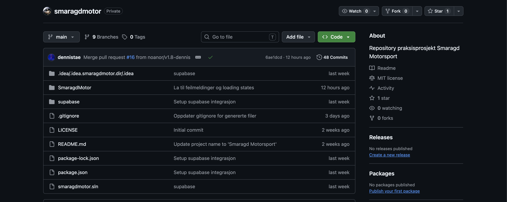
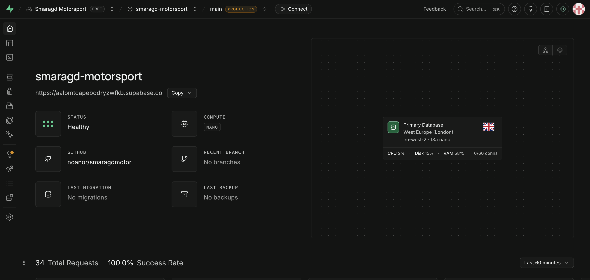
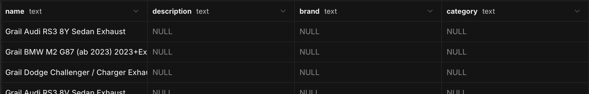
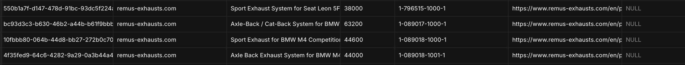

STATUSRAPPORT
Hvor står vi nå?
En kort oversikt over hva vi har gjort, hva vi har oppnådd og hvor prosjektet befinner seg.
Prosjektstatus
Vi begynner nå å bli ferdige med planleggingsfasen av prosjektet. Ansvarsområdene er fordelt mellom gruppemedlemmene, og vi har fått en tydeligere oversikt over hvordan prosjektet skal utvikles videre. Dette gjør det enklere å gå over i utviklingsfasen med klare oppgaver og mål for hver del av løsningen.
Utfordringsområde
Flere felt i datasettet mangler informasjon, blant annet description, brand og category. Dette er et problem fordi disse feltene brukes til søk og filtrering av produkter, og manglende data gjør at produkter kan bli vanskelige å finne eller vises med ufullstendig informasjon. Vi er i dialog med kontaktpersonen vår for å få skaffe bilder fra en av leverandørene, men hvordan description, brand og category skal fylles inn er fortsatt ikke avklart.
Video
Skjermbilder



